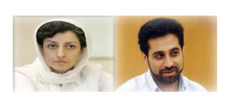

|
|
|
Browsing
Contact Us |
Campaigners |
Face to Face |
Tribune |
Interview |
News |
On the Web |
One Million |
Report
Farsi | Français | German | Italian | Spanish | العربية Also in this section
|
 Urgent Action: Two Human Rights Defenders Detained in IranTuesday 22 June 2010 Amnesty International: A man and a woman, both members of the Iranian NGO, the Centre for Human Rights Defenders (CHRD), are believed to be held in Evin Prison where they are are at risk of torture or other ill-treatment. Amnesty International believes they are prisoners of conscience, detained solely for the peaceful exercise of their rights to freedom of expression and association. Narges Mohammadi, the Deputy Head of the CHRD and the mother of three-year-old twins, was arrested late on 10 June at her home in Tehran. She has been permitted to make only one phone call to relatives. Abdolreza Tajik, a journalist and member of the CHRD, was arrested on 12 June, after being summoned to the office of the Ministry of Intelligence in Tehran and has been held since in incommunicado detention. This is his third arrest since the disputed presidential election of June 2009 (see UA 171/09 and updates). On 11 June, the day before the first anniversary of the election, a state-run television channel broadcast an interview with Javad Tavassolian, the husband of CHRD founder Shirin Ebadi. During the interview, recorded while he was in detention in July 2009, Javad Tavassolian criticized his wife. Shirin Ebadi has stated that her husband told her he was ill-treated in detention to force him to make the statements. It appears that the interview broadcast was timed to coincide with the anniversary of the election and the final session of a review by the UN Human Rights Council of Iran’s human rights record which took place on 10 June. Narges Mohammadi and Abdolreza Tajik may have been arrested to prevent them responding publicly to the broadcast. The office of the CHRD was forcibly closed in December 2008, although its members have continued their human rights activities. Several members have been detained since the disputed election. PLEASE WRITE IMMEDIATELY in Persian, Arabic, English, French or your own language:
PLEASE SEND APPEALS BEFORE 30 JULY 2010 TO: Head of the Judiciary Ayatollah Sadeqh Larijani Howzeh Riyasat-e Qoveh Qazaiyeh (Office of the Head of the Judiciary) Pasteur St., Vali Asr Ave., south of Serah-e Jomhouri Tehran 1316814737 Islamic Republic of Iran Email: Via website: http://www.dadiran.ir/tabid/75/Default.aspx First starred box: your given name; second starred box: your family name; third: your email address Salutation: Your Excellency Head of the Provincial Judiciary in Tehran Ali Reza Avaei Karimkhan Zand Avenue Sana’i Avenue, Corner of Alley 17, No. 152 Tehran, Islamic Republic of Iran Email: avaei@Dadgostary-tehran.ir Salutation: Dear Mr Avaei And copies to: Secretary General, High Council for Human Rights Mohammad Javad Larijani Howzeh Riassat-e Ghoveh Ghazaiyeh Pasteur St, Vali Asr Ave., south of Serah-e Jomhuri Tehran 1316814737 Islamic Republic of Iran Fax: +98 21 3390 4986 Email: bia.judi@yahoo.com (In subject line: FAO Mohammad Javad Larijani) Additional Information The office of the CHRD was forcibly closed in December 2008, although its members have continued to carry out their work in support of human rights. Several of its members have been detained since the 2009 election. The organization’s founder, Nobel Peace Prize laureate Shirin Ebadi, is currently living outside Iran due to fears for her safely if she should return. She has received many death threats, and her bank account in Iran containing her Nobel Prize has been frozen, in contravention of Iranian law. Narges Mohammadi was banned from leaving the country in May 2010 when on her way to attend a conference in Guatemala. She has been repeatedly summoned to a court for interrogation and told to stop her work with the CHRD and not to contact Shirin Ebadi. Abdolreza Tajik was also banned from leaving the country in February 2009 when planning to attend a seminar in Spain. He was arrested on 14 June 2009 and released on bail after 45 days. He was rearrested again in December following anti-government protests on the religious festival of Ashoura and spent over 60 days in detention. On the same day that Narges Mohammadi was arrested the United Nations Human Rights Council adopted a report containing recommendations accepted by Iran which included a recommendation to “Enhance freedom of expression and assembly, and to safeguard all groups, journalists and especially human rights defenders”. The Iranian authorities refused permission for demonstrations to be held on the anniversary of the presidential election, and arrests of political activists, human rights defenders, students, trade unionists and others increased in the days and weeks before the anniversary. Some people defied a heavy security presence to demonstrate on the streets of Tehran. At least 91 people were arrested in connection with demonstrations, according to the Tehran Police Commander. Protests at the disputed outcome of the 2009 election were violently repressed, with scores killed. Thousands were arrested, many of whom were tortured or otherwise ill-treated, often to obtain forced “confessions”. Hundreds have been tried unfairly, including in mass “show trials”, many of whom are serving long-prison terms, often as prisoners of conscience. Some have been sentenced to death, and two executed. |